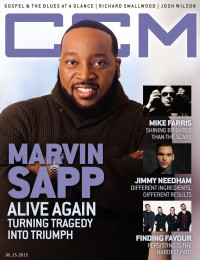

CMnexus
: Contemporary Christian culture, music, and media.
|
|
Marvin SappOn the cover|  | 15 July 2015
CCM Digital | Media coverage:- Dec 1999 in Profile "Flying Solo", by Dan MacIntosh, Cameron Strang
- Jun 2009 in Charisma "Praise Him In The Storm: Marvin Sapp", by Chad Bonham
- May 2010 in Group "Ideas: Ministry and Media: Marvin Sapp", by Scott Firestone IV
- Aug 2010 in CCM Digital "The Fringe: Marvin Sapp", by Andrew Greer
- Apr 2011 in Charisma "Praise Through Pain", by DeWayne Hamby
- Jun 2012 in CCM Digital "The Fringe: Marvin Sapp", by Andrew Greer
- Nov 2012 in CCM Digital "Tour Spotlight: The King's Men Tour, United Center, Chicago, IL", by Andy Argyrakis
- 15 Jul 2015 in CCM Digital "Counting On God", by Matt Conner
Albums & reviews:1997: Grace and Mercy1999: Nothing Else Matters2002: I Believe2005: Be Exalted2007: Thirsty2010: Here I Am2012: I Win2013: Christmas Card2015: You Shall Live2017: Close2020: Chosen Vessel Award Summary (Nominations / Wins)Dove Awards1999 Dove Awards2001 Dove Awards2003 Dove Awards- Traditional Gospel Recorded Song: "I Love To Praise Him"
2008 Dove Awards2009 Dove Awards2011 Dove Awards2012 Dove Awards- Contemporary Gospel Recorded Song: "He Has His Hands On You"
2016 Dove Awards2018 Dove Awards- Traditional Gospel Recorded Song: "Close"
2019 Dove Awards- Traditional Gospel Recorded Song: "Kind God"
Grammy Awards2005 Grammy Awards- Best Traditional Soul Gospel Album: Be Exalted
2007 Grammy Awards- Best Traditional Gospel Album: Thirsty
2010 Grammy Awards- Best Traditional Gospel Album: Here I Am
2012 Grammy Awards2017 Grammy Awards |
|